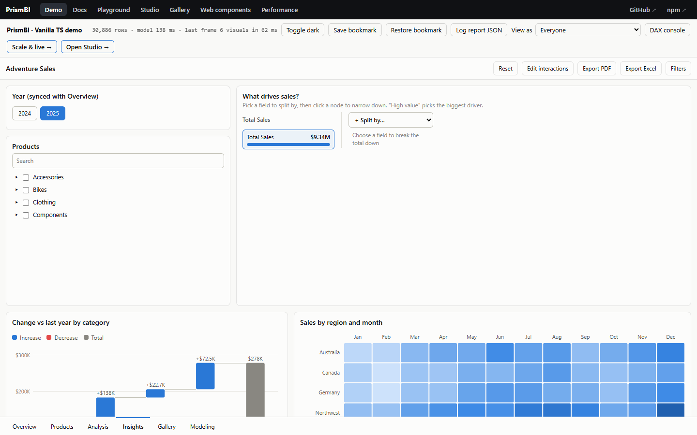
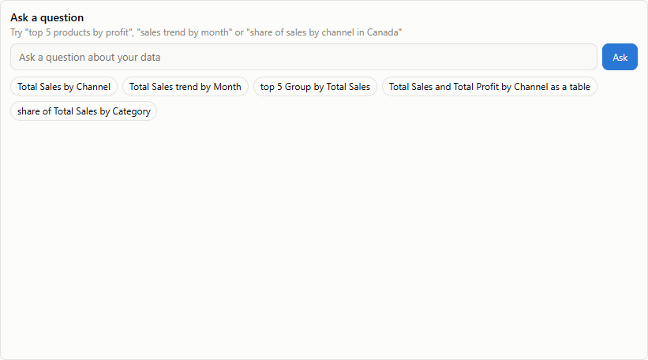
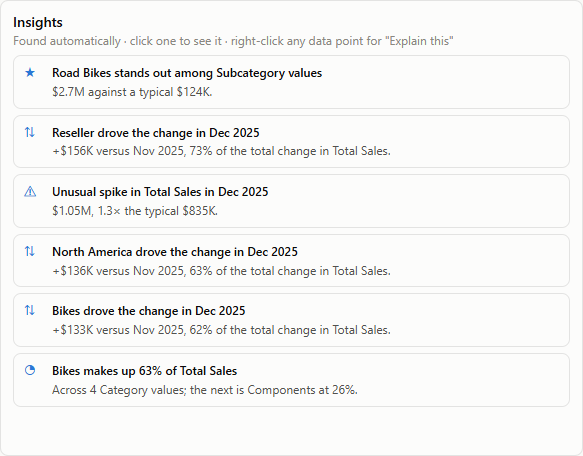
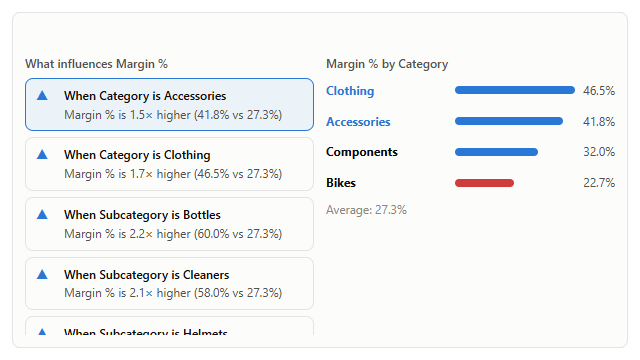
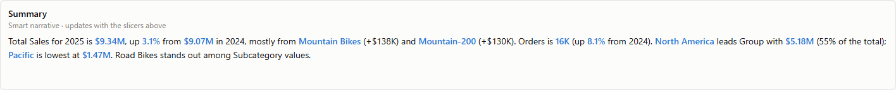
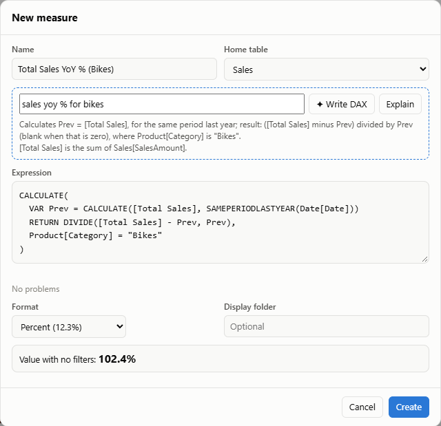
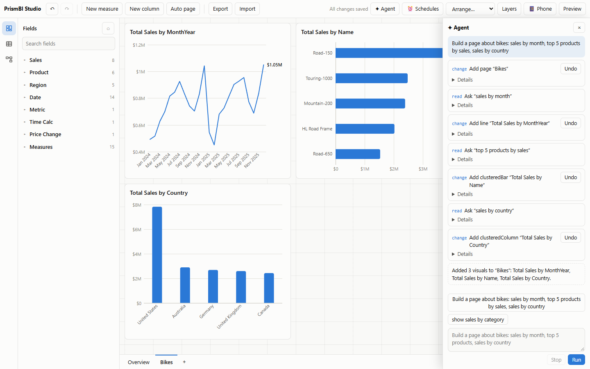

AI: questions, explanations, insights and agents

@prismbi/prismbi/ai adds four things. Everything runs offline on the model by default, with no API keys or network calls:
- Ask: a plain-language question becomes a visual.
- Explain: why a value is what it is.
- Insights: what's unusual in the data.
- Agents: context and tools for AI agent frameworks.
Language models are optional, plugged in through a function you provide.
import '@prismbi/prismbi/ai'; // registers the `qna` and `insights` visuals and "Explain this" on right-click
import { ask, explain, findInsights, getAIContext, createAgentTools } from '@prismbi/prismbi/ai';Ask #
const { spec, interpretation, unmatched, confidence } = askSync(model, 'top 5 products by profit in 2025');
// spec → { type: 'clusteredBar', fields: { category: 'Product[Name]', values: ['Total Profit'] }, top: 5, sort: …, filters: [Year = 2025] }
report.addVisual({ ...spec, layout: { x: 0, y: 0, w: 6, h: 7 } });The parser builds its vocabulary from the model: measure names (with "Total Sales" also answering to "sales"), table and column names, and the values of short text columns. It understands:
| You say | It does |
|---|---|
by category, per region, for each channel | groups by the column (a table name picks its label column) |
in Canada, bikes and clothing | filters on the column holding those values |
2025, last year, this year, last quarter, last 6 months, ytd | date filters relative to the latest date with data |
top 5, bottom 3, highest, lowest | Top N and sort direction |
average price, max quantity, how many orders, distinct customers | implicit aggregations |
trend, share, as a table, matrix, scatter, as bars | the visual type |
Without a hint it picks a sensible chart:
| Question shape | Chart |
|---|---|
| No grouping | A card |
| Grouped by time | A line, by year-month unless a single year is selected |
| Few categories | Columns |
| Many categories or a Top N | Bars |
| Two groupings | A clustered or matrix layout |
unmatched lists words it didn't understand. confidence is the share of the question it did.
-
Synonyms:
askSync(model, q, { synonyms: { 'Total Sales': ['revenue', 'turnover'] } }). -
Language model:
await ask(model, q, { llm })callsllm(prompt)with the schema and the question. It expects a JSON plan back. Plans that reference unknown fields fall back to the rules (sourcesays which was used).llmPrompt(model, q)shows the exact prompt.
const llm = async (prompt: string) => (await fetch('/api/llm', { method: 'POST', body: prompt })).text();
const answer = await ask(model, 'how did margins move in Europe vs last year?', { llm });The Q&A visual #

{ type: 'qna', title: 'Ask a question', layout: { x: 0, y: 0, w: 7, h: 9 }, fields: {},
format: { qna: { synonyms: { 'Total Sales': ['revenue'] }, suggestions: ['sales by month'] } } }- Answers: a nested visual, filtered by the page's slicers and filters.
- Chips: show how the question was understood.
- Empty box: suggested questions generated from the model.
Explain #
const x = explain(model, { measure: 'Total Sales', filters: [{ target: 'Date[Year]', op: 'eq', value: 2025 }] });
x.summary; // "Total Sales rose 3.1% to $9.34M from $9.07M in 2024. Biggest contributors: Category Bikes (+$138K, …)"
x.drivers; // [{ column: 'Product[Category]', value: 'Bikes', current, baseline, delta, share }, …]- Change mode: when the filters contain a period (a year, a date range, a day), the value is compared with the period before. Members of each dimension are ranked by their contribution to the change.
- Composition mode: otherwise, it says which members make up the value.
-
Dimensions: text columns of tables wired into the model. Calculation groups and parameter tables are skipped. Pass
dimensionsto choose them.
Right-clicking any data point offers Explain this once @prismbi/prismbi/ai is imported (enableExplain(false) turns it off). Its panel shows the summary, the top drivers and a chart.
Insights #

findInsights(model, { measure: 'Total Sales', filters, max: 6 });
// [{ kind: 'outlier', title: 'Road Bikes stands out among Subcategory values', detail: '$2.7M against a typical $124K.', score, spec }, …]| Kind | Finds |
|---|---|
anomaly | periods far from a rolling median (robust z-score ≥ 3.5) |
trend | the latest periods against the ones before (±5% or more) |
mover | the member that drove most of the change in the latest period |
concentration | one member holding 40% or more of the total |
outlier | members far from the rest of their dimension |
The insights visual (fields: { values: 'Total Sales' }, optional dimensions) lists them for the current filters. Clicking one shows its chart.
Anomaly alerts #
watchAnomalies re-runs the insights whenever the model changes (streams, refreshes, appended rows) and reports each new finding once:
const stop = watchAnomalies(model, {
measure: 'Total Sales',
filters: [{ target: 'Region[Country]', op: 'eq', value: 'Canada' }],
kinds: ['anomaly', 'mover'], // default ['anomaly']: unusual spikes and dips
debounceMs: 500,
onAnomaly: ({ insight }) => notify(`${insight.title}: ${insight.detail}`),
});What is already unusual when watching starts doesn't alert, unless you set alertExisting: true. In a report definition, use alerts: [{ …, when: { anomaly: true } }]. The server's watchAlerts runs those too (see Server).
Key influencers #
keyInfluencers(model, { measure, explainBy?, filters?, basis?, minShare?, max? }) finds the column values that move a measure most: every value of every column is compared with the overall figure, and large effects in large segments come first.

keyInfluencers(model, { measure: 'Margin %', explainBy: ['Product[Category]', 'Region[Group]'] });
// { metric: 'Margin %', overall: 0.273, influencers: [{ label: 'Category is Accessories', effect: '1.5× higher', segment: 0.418, share: 0.37, … }, …], columns: [...] }-
Sums and counts are compared per row (
basis: 'perRow', chosen automatically when the measure adds up over a column's segments): "Total Sales per row is 78% lower when Category is Accessories". Averages and rates (basis: 'value') are compared as they are. -
Columns:
explainBydefaults to the model's categorical columns, as for insights. Segments underminShareof the rows (default 5%) are ignored, and the same rows reached through two columns (a subcategory with a single product) are listed once. -
The visual:
type: 'keyInfluencers'(fields: { values: 'Margin %', explainBy: [...] }, aliasinfluencers) lists the influencers on the left and the chosen one's column against the average on the right. Clicking a bar cross-filters the page.format.keyInfluencerstakesmax,minShareandbasis. Register it withregisterAI().
Narrative #
The narrative visual writes a short summary of its measures that updates with filters and selections, like Power BI's smart narrative:

{ type: 'narrative', fields: { values: ['Total Sales', 'Orders'], category: 'Region[Group]' }, format: { narrative: { insights: 1 } } }
// "Total Sales for 2025 is $9.34M, up 3.1% from $9.07M in 2024, mostly from Mountain Bikes (+$138K) and Mountain-200 (+$130K).
// Orders is 16K (up 8.1% from 2024). North America leads Group with $5.18M (55% of the total); Pacific is lowest at $1.47M. …"-
What it covers:
- The first measure gets its value, the change from the previous period (when the filters name a year or date range) and the biggest contributors.
- Other measures (up to three) get their value and change.
-
The optional
categoryadds a breakdown: the leader and the lowest, or the trend for dates and numbers. -
format.narrative.insights(default 2) appends the topfindInsightsresults.
-
Custom text:
format.narrative.textsets the wording, e.g. `'Revenue is {[Total Sales]} across {[Orders]} orders.
{summary}'. {[Measure]} becomes a formatted value, {summary}` the automatic text, and a blank line starts a paragraph.
-
Rewording with a language model:
setNarrativeWriter(async (facts) => callYourLLM(facts)). The rule-based text shows immediately, and the reworded version replaces it when it arrives. Results are cached per filter state. Setformat.narrative.llm: falseto keep a visual rule-based. -
Outside a visual:
writeNarrative(model, { measures, filters, breakdown?, insights?, template? })returns{ text, sentences }. Each sentence is a list of parts, with{ value }parts for the emphasised numbers and names.
DAX copilot #
Write measures from plain English, and explain existing ones:

import { writeDax, writeDaxSync, explainDax, daxCopilot } from '@prismbi/prismbi/ai';
writeDaxSync(model, 'sales year to date');
// { expression: 'TOTALYTD([Total Sales], Date[Date])', name: 'Total Sales YTD', value: …, note: 'Understood: …', source: 'rules' }
writeDaxSync(model, 'sales yoy % for bikes'); // VAR Prev = … RETURN DIVIDE(…) inside CALCULATE(…, Product[Category] = "Bikes"), format 0.0%
writeDaxSync(model, 'profit per order'); // DIVIDE([Total Profit], [Orders])
explainDax(model, 'CALCULATE([Orders], ALL(Product), Product[Color] = "Red")');
// "Calculates [Orders], ignoring filters on Product and where Product[Color] is "Red".
[Orders] is the number of distinct Sales[OrderNumber]."-
What the rules understand:
- The model's measures, numeric columns with an aggregation ("average quantity"), and values as filters ("for bikes in 2025").
- Ratios: "X per Y", "X divided by Y", "X margin".
- Time intelligence: YTD, QTD, MTD, last year, year-over-year change and %, running total, and share of total.
- Validation: every suggestion is checked by evaluating it, so a broken expression never comes back.
-
With a language model:
writeDax(model, text, { llm })asks the model for JSON (daxPromptbuilds the prompt from the model context). It validates the answer and retries once with the error. If both attempts fail, it falls back to the rules, and thenotesays why. -
In the Studio: pass
copilot: daxCopilot(model, { llm? })tonew Studio(…), or callstudio.setCopilot(…).- The measure editor gains a "Describe it" box with ✦ Write DAX and Explain.
- The suggestion fills in the expression, name and format.
- The usual live preview and checks run before saving.
Agents #
Agent frameworks need two things: context about the data, and tools to act on it.
Context #
const ctx = getAIContext(model, { report }); // serialisable JSON
const system = contextToPrompt(ctx); // compact text for a system promptThe context contains:
- Tables: row counts and columns, each with type, distinct count, examples or min/max, format and calculated-column DAX.
- Model: relationships, and measures with their DAX, format and description.
-
Report state (with a
report): current page, pages, the visuals on the page with their fields, report and page filters, slicer selections and the cross-filter selection.
Tools #
createAgentTools({ model, report }) returns provider-agnostic tools, each with a JSON-schema input and a run function:
| Tool | Does |
|---|---|
describe_model | schema, relationships, measures |
list_values | distinct values of a column (with search), to find exact filter values |
run_query | group, aggregate, sort, Top N; formatted and raw values plus totals |
evaluate_dax | a scalar expression, or EVALUATE <table expression> |
ask | a question → a visual spec |
explain_value, find_insights | as above |
get_report_state, go_to_page | with a report |
add_page, add_visual, remove_visual, set_filters | with a report and writes allowed |
create_measure | validated by evaluating it first; writes allowed |
-
Writes: allowed by default when a report is attached. Set
allowWrites: falsefor read-only agents. - Dates: may arrive as ISO strings and are revived automatically.
-
Errors:
runToolreturns them as{ error }so the agent can correct itself. -
Formats: convert the tools with
toAnthropicTools,toOpenAIToolsortoMcpTools.
A Claude agent loop #
Run this on your server with the Anthropic SDK:
import Anthropic from '@anthropic-ai/sdk';
import { createAgentTools, getAIContext, contextToPrompt, runTool, toAnthropicTools } from '@prismbi/prismbi/ai';
const client = new Anthropic();
const tools = createAgentTools({ model, report });
const messages: Anthropic.MessageParam[] = [{ role: 'user', content: 'Build a page explaining why 2025 sales grew, by region and product.' }];
for (;;) {
const res = await client.messages.create({
model: 'claude-opus-5-5',
max_tokens: 4096,
system: `You are a BI analyst working in a PrismBI report.\n\n${contextToPrompt(getAIContext(model, { report }))}`,
tools: toAnthropicTools(tools),
messages,
});
messages.push({ role: 'assistant', content: res.content });
if (res.stop_reason !== 'tool_use') break;
const results = await Promise.all(
res.content.filter((b) => b.type === 'tool_use').map(async (b) => ({
type: 'tool_result' as const,
tool_use_id: b.id,
content: JSON.stringify(await runTool(tools, b.name, b.input)),
})),
);
messages.push({ role: 'user', content: results });
}The same tools work with any orchestrator that accepts JSON-schema tools: OpenAI function calling, LangGraph, the Vercel AI SDK, and your own planner.
runAgent and LLM adapters #
runAgent is the same loop without an SDK. It works with any model through a small adapter:
import { runAgent, anthropicLLM, openAILLM, createAgentTools } from '@prismbi/prismbi/ai';
const result = await runAgent({
llm: anthropicLLM({ url: '/api/llm' }), // or openAILLM({ url, model }) for OpenAI-compatible servers (Azure, Ollama, vLLM…)
tools: createAgentTools({ model, report }),
prompt: 'Build a page explaining Q3 by region and product',
beforeTool: (call, write) => !write || confirm(`Run ${call.name}?`),
onStep: (step) => console.log(step.call.name, step.result),
});
console.log(result.text);-
Keys stay on your server. Point
urlat a proxy that adds the API key.apiKeyalso works for local experiments; it sends the browser-access header Anthropic requires. -
Your own model: an
AgentLLMis one function,({ system, messages, tools, signal }) => { text?, toolCalls? }. Messages use a neutral format (user,assistantwithtoolCalls, andtoolresults). -
Offline:
ruleBasedLLM()needs no model. It splits the prompt into a page and questions withplanPrompt, then callsadd_page,askandadd_visual. It handles "build a page about X: A, B and C"-style requests; anything open-ended needs a real model. -
Defaults:
maxStepsdefaults to 16 model turns.WRITE_TOOLSlists the tools that change things. Errors come back to the model as{ error }.
The Studio agent panel #

import { agentPanel, anthropicLLM } from '@prismbi/prismbi/ai';
const agent = agentPanel(studio, {
llm: anthropicLLM({ url: '/api/llm' }), // omit to use the offline rule-based planner
confirmWrites: false, // true: preview every change and wait for Apply / Skip
suggestions: ['Build a page about bikes: sales by month, top 5 products, sales by country'],
});- Where it lives: a ✦ Agent button in the Studio top bar opens a side panel.
- What it logs: each tool call is listed with its input and result. Changes have an Undo button that restores the report from before that step and drops later steps. The model is told about the undo on its next turn.
- Undo history: every change is also a normal Studio undo step, so Ctrl+Z still works.
-
API:
agent.run(prompt),agent.undoStep(i),agent.steps,open(),close(),destroy().
Try it with npm run dev, then open /studio.html. Add ?llm=/api/llm to use your own Anthropic-compatible endpoint.
Standalone MCP server #
Expose a model to Model Context Protocol (MCP) clients (Cursor, Claude Desktop, Gemini, agents) with PrismBI's built-in zero-dependency server:
import { createMcpServer } from '@prismbi/prismbi/ai';
const mcp = createMcpServer({ model, allowWrites: false, name: 'sales-mcp' });
// Over stdio (standard input/output):
mcp.handleStdio();
// Or over any JSON-RPC 2.0 transport:
const response = await mcp.handleMessage(jsonRpcMessage);You can also use the official @modelcontextprotocol/sdk:
import { Server } from '@modelcontextprotocol/sdk/server/index.js';
import { StdioServerTransport } from '@modelcontextprotocol/sdk/server/stdio.js';
import { ListToolsRequestSchema, CallToolRequestSchema } from '@modelcontextprotocol/sdk/types.js';
import { createAgentTools, runTool, toMcpTools } from '@prismbi/prismbi/ai';
const tools = createAgentTools({ model, allowWrites: false });
const server = new Server({ name: '@prismbi/prismbi', version: '0.11.0' }, { capabilities: { tools: {} } });
server.setRequestHandler(ListToolsRequestSchema, async () => ({ tools: toMcpTools(tools) }));
server.setRequestHandler(CallToolRequestSchema, async (req) => ({
content: [{ type: 'text', text: JSON.stringify(await runTool(tools, req.params.name, req.params.arguments)) }],
}));
await server.connect(new StdioServerTransport());The model engine has no DOM dependency, so this runs on Node. Load data with @prismbi/prismbi/connectors.
Try it #
import { askSync, writeDaxSync, explainDax } from '@prismbi/prismbi/ai';
import { createVisual } from '@prismbi/prismbi';
const answer = askSync(model, 'top 5 products by sales in 2025');
const measure = writeDaxSync(model, 'sales year to date for bikes');
console.log(measure.expression, explainDax(model, measure.expression));
return createVisual(el, { model, ...answer.spec });On the docs site (npm run docs), ▶ Run in playground opens it in an editor next to its output.